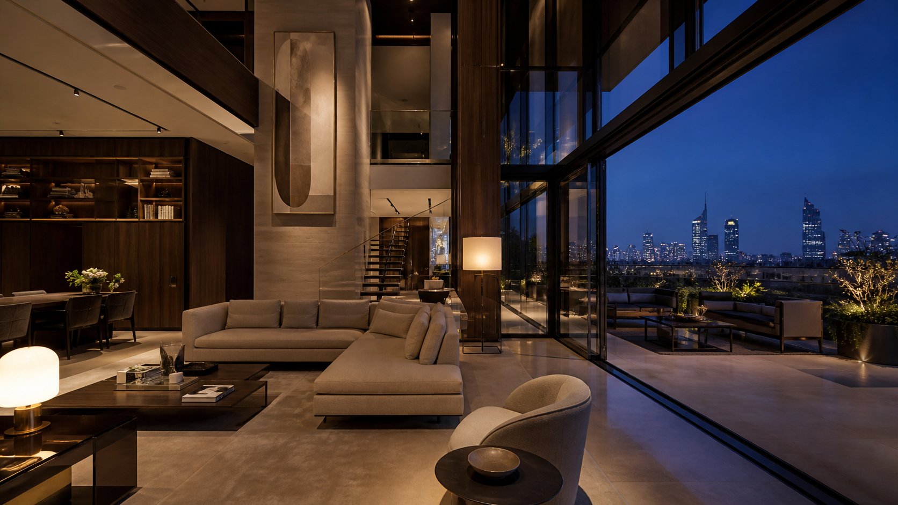

01 / Il living
Una stanza
grande quanto
la sera.
Vetri a tutta altezza, marmo Calacatta e luce che cambia insieme alla città.
01 Avvicinati
Attico Velario Visita immersiva
Un attico che non guarda la città: la contiene.
Una posizione irripetibile
Al vertice di una residenza contemporanea, Velario trasforma il panorama in architettura. Dalla piscina sul tetto al salone a doppia altezza, ogni ambiente mantiene Milano esattamente dove dovrebbe essere: davanti a te.
Richiedi il dossier riservatoTre atti, un solo attico
01 / Il living
Vetri a tutta altezza, marmo Calacatta e luce che cambia insieme alla città.
02 / Il tetto
Piscina in basalto, ulivi scolpiti e un dehors che non deve prenotare nessuno.

Attico Velario
Una dimora Housei